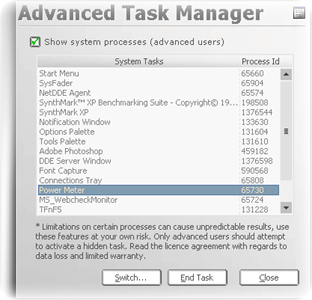

|
The Advanced Task
Manager Feature. See Also: Tweaking with SynthMark XP,
Back to Main. The ATM is one of SynthMark’s optimization features, it
allows you to close certain background programs and free up processor time slices
and memory for use with SynthMark XP. In its trail version incarnation the
advanced mode is disabled and you can only close normal programs with
SynthMark XP. But once you own the full version of SynthMark XP a whole new
world to optimization opens up you get much more power to free up memory and
valuable CPU time for SynthMark XP and the rest of the programs you may want
to run. Remember though that if you close the Power Meter program with
the ATM, your power icon on your tray will close, or you close your
HiddenFaxWindow program then your computer won’t be able to receive
faxes until you restart Windows. A few examples of what the full version can close:
How to use the burn in Wizard: 1.
Open SynthMark XP, and click the tools drop down menu. 2.
The first option is called ‘Advanced Task
Manager’. 3.
Click it and a window like the one shown below will open. 4.
Selecting the task you want to close you can click the
‘End Task’ button to close it. 5.
You can bring the windows to the front of your screen (unhide)
using the ‘Switch…’ button. 6.
Remember that your ‘show system processes’ check
box will only be enabled when you register the full version.  |
||||||||||||||||